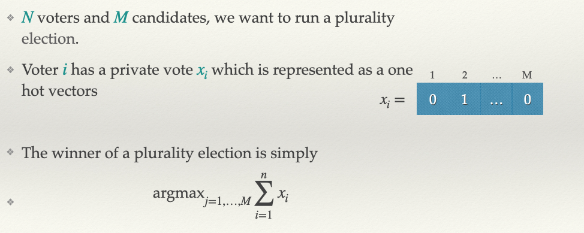
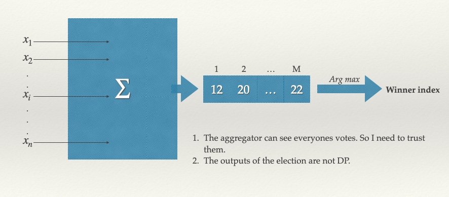
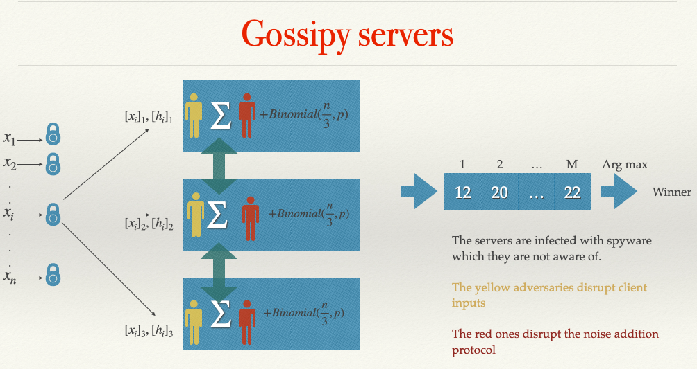

Work in progress
Authors: Ari B, Graham C.
There are \(M\) candidates in an election and \(n\) voters. Each voter is required to vote for at most 1 candidate once once. A central aggregator collects these votes, aggregates them and declares the winner by computing the index of the candidate that received the most votes. Such an election is known as a plurality election.
 
For this system to work properly, we need to make the following assumptions:
The above system is not differentially private. An adversary could re-run the election with a neighbouring dataset; this would reveal the vote of a voter.
We need to trust the central aggregator.
We hope that the central does not get attacked.
The rest of this document attempts to relax aforementioned assumptions by dealing with the system disadvantages. Before describing protocols for private voting, we recap 3 different privacy models. Privacy models apply to both clients (voters) and servers.
Fully Trusted: In this protocol – the central aggregator is fully trusted. We trust them to not get breached, to do the aggregation correctly, to not use voter inputs maliciously. Similarly, we assume voters did not part take in any voter coercion or did not collude with the server.
Semi Honest Model/Passive Security/Honest but curious: In this model, we require that the voters and the server all follow the specified protocols to the letter. Outside of the protocols, they may use information to their advantage anyway they want.
Malicious Model: A fraction of servers or clients might behave adversarially in any way they desire. However, we assume malicious agent has is an PPT algorithm.
Later we will define another trust model which lies between semi honest and malicious models.
Under the fully trusted model, the central server could add Laplace noise with scale \(O(\frac{1}{\epsilon})\) and then compute the arg max or sample the winner using the exponential mechanism. Either would guarantee \((\epsilon, 0)\) DP.
The central server still has to be trusted to act honestly and it can see who voted for whom
TODO
The semi honest model gets away from having to completely trust the central aggregator. Using a combination additive secret sharing and Shamir’s secret sharing we show that, we can still compute the plurality winner and ensure DP. See the these slides for a practical algorithm that allows for certain clients dropping out to compute the winner of plurality election.
In this model, the server adds Laplace noise or uses the exponential mechanism to ensure DP.
While we have prevented the server from seeing the voter inputs, we now need everyone to follow the protocol honestly. This implies even if one client were to send bad input, the entire election is compromised. So we now need to be able to deal with malicious clients.
TODO
Under this model, we do not put any restrictions on the clients. They can be well behaved or malicious. Instead of having 1 central aggregator, we have \(K\) aggregators that work together. Under this model we give the following guarantees:
See the following notes for the details of how these protocols work: Notes
It is not immediately clear to me if the one honest server in PRIO is able to detect that the other servers are malicious. I need to have re-derive the protocol and have another think. My intuition is – it cannot, but POPLAR can so I guess it doesn’t matter too much.
Protection against a complete set of malicious servers seems unreasonable, unless we assume that all voters can communicate with each other through peer-to-peer encrypted channels.
If we are willing to assume that all the servers are honest and trusted, then we get all the nice properties we desire – input privacy and output DP.
There could a formal term for this model, I am not sure. I made this is up so we should discuss this. I am not sure if this is practical – but this is model prevents central noise addition, so we can use distributed DP.
We assume that servers are semi-honest i.e. they follow the protocols as required. For correctness of protocol we will require all the servers are semi honest and for privacy we will require at least 1 server is semi honest. Thus far this gives the same level of security as the above section. We add to this set of assumptions another constraint. We assume that at least one of the servers is gossipy and not properly implemented. They are subject to data breaches, spy-wares or and man in the middle attacks. See figure below for an illustration.

The yellow adversary can be modelled as a malicious client, so there is no extra work. If we use Poplar, one of the honest servers will let the honest client know that one of the servers has been corrupted. As the clients use secret sharing, their privacy is not compromised in any meaningful way. The adversary just sees random values.
The red adversary is dangerous. Their presence implies, the server cannot be trusted to add calibrated noise. The servers could add 0 noise, ensuring the final aggregate is not differentially private, thereby learning about the clients via re-running the mechanism on a neighbouring dataset. Now the onus of adding noise is on the client through a local randomiser. But this means, the server checks for malicious clients are no longer valid
One solution is Randomised Response (Local Privacy). The authors of PRIO make a case for why this is not that great of idea. For one the error scales \(O(\frac{1}{\sqrt{n}})\). Furthermore, to be able to reconstruct meaningful estimates, the probability of flipping their true value to a random value \(p\) needs to be really small. To illustrate why randomised response is not efficient in such a scenario, we quote the PRIO paper, every bit that each phone transmits leaks some private user information to the vendor. In particular, when p = 0.1 the vendor has a good chance of seeing the correct (unflipped) user response. Increasing the noise level p decreases this leakage, but adding more noise also decreases the accuracy of the vendor’s final estimate. As an example, assume that the vendor collects randomized responses from one million phones using p = 0.49, and that 1% of phones have the sensitive app installed. Even with such a large number of responses, the vendor will incorrectly conclude that no phones have the app installed roughly one third of the time.
Additive noise mechanisms: A new line of work shows that if the clients have more than 1 bit to communicate with servers, we can get near constant error. There are two issues with these methods, (1) they need the number of clients \(n\) to be very large. (2) There is no efficient way to distinguish between the unlucky honest client and the malicious client. Consider the following example, where the local randomiser requires each client add \(Bernoulli(p)\) noise to each of their input coordinates. A dishonest voter, could add no noise and send a vector of all 1’s. Technically this a legal vote and our SNIPs checking protocol would not block this, however the final de-biasing algorithm will be incorrect with high probability.
Can we come up with a distributed DP algorithm with “good” accuracy guarantees but where we can also detect ballot stuffing.